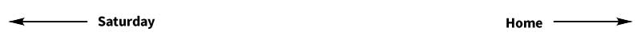

Aftermath
{kind=link}
General Sir John Maxwell's punishment and supression of the rising was swift and harsh. Pearse, Clarke and MacDonagh were sentenced to death on May 2nd, and shot at dawn the next day in the stonebreaker's yard in Kilmainham Gaol. British Prime Minister Herbert Asquith warned Maxwell against sowing the seeds of lasting troubles in Ireland by going too far, but Maxwell saw to the executions of a further tweleve leaders between the third and twelefth of May (Roger Casement would be hanged later in the year in Pentonville Prison in London. As both Asquith and Irish Parliamentary Party leader John Redmond feared, the general public were horrified by this swift retribution, bearing in mind that Joseph Plunkett was fatally ill, James Connolly had been so badly wounded in the GPO that he had to be tied to chair to be shot, despite the fact that a doctor who tended to his wounds was of the opinion that he only had a day or two to live anyway, and Willie Pearse seemed to have been sentenced because of the surname he shared with his brother Patrick.
The final death toll of the Rising was four hundred and eighty-five, more than half of those civilians. The centre of the city was in ruins, which was far more the fault of the British forces than the Rebels. This, coupled with the emerging details of the fate of Francis Sheehy-Skeffington and the massacre at North King Street saw newspapers and the Catholic church joined the public in symapthising with the rebels they had previously condemned. Reading annecdotal evidence like the opinion of one Captain Stanley, the medical officer present for the first nine exectutions, that "They all died like lions" only enraged the public more. The slain leaders became cult figures, inspiring ballads and fund raising, and the swell of public feeling, fanned further by the Conscription Crisis in early 1918, where a law was actually passed to introduce conscription in Ireland despite serious opposition from tradeunions, politicians and the church, but it was never acted upon, culminiated in the result of the general election in December of that year.
Sinn Féin, the political party founded by journalist Artur Griffith in 1905, was actually in decline at the time of the rising, but received a boost as both the autorities and journalists inisisted on referring to the events of the week as 'the Sinn Féin Rising'. When Elizabeth O'Farrell spoke to the officer in command on Great Britain Street, she offered the message that the Commandant of the Irish Republican Army wished to discuss term, but the officer replied, "The Irish Republican Army - the Sinn Feiners you mean". In the United Kingdom general election of 1918, Sinn Féin, led now, as was the Irish Volunteers, by Éamon de Valera, took seventy-three of Ireland's one hundred and five seats, destroying the moderate nationalist Irish Parliamentary Party. The elected memebers then refused to take their seats in Westminister, instead forming An Chéad Dáil (the first assembly or parliament) in the Mansion House in Dublin on the 21st of January 1919. Proceedings at this first meeting were entirely in Irish, the only time this happened, and the very hard to kill Cathal Brugha was elected as Ceann Comhairle (chairman). The Forógra na Saoirse (Declaration of Independence) was adopted at this first meeting, declaring an Irish Republic with jurisdiction over the whole island.
{kind=link}
..we, the elected Representatives of the ancient Irish people in National Parliament assembled, do, in the name of the Irish nation, ratify the establishment of the Irish Republic and pledge ourselves and our people to make this declaration effective by every means at our command.
On the same day, two members of the Royal Irish Constabulary were killed during the Soloheadbeg Ambush, near Tipperary. This turned out to be the first act of the Irish War of Independence, although the Dáil would not officially declare war on Great Britain until much later.
